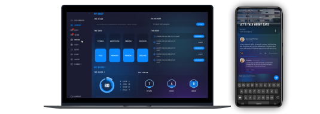

View case
Case Study
WUW
Product evolution through a systematic approach to design
Context:
Platform for personal growth. 5000+ users.
My role:
Lead Product Designer (from research to development).
Problem:
Chaos in the interface (200+ styles), slow development speed, impossibility of White Label.
Solution:
Systematic approach: 35 reusable components, tokens, evolutionary refactoring.
Result:
-90% styles, ×3 development speed, White Label open, consistency 95% → 95%.
Key decision:
Instead of redrawing from scratch, I created a constructor from which 80% of the interface is assembled.